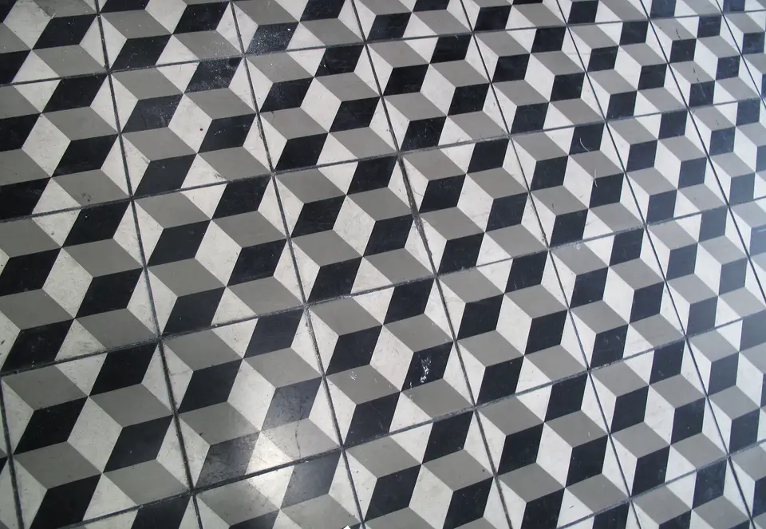
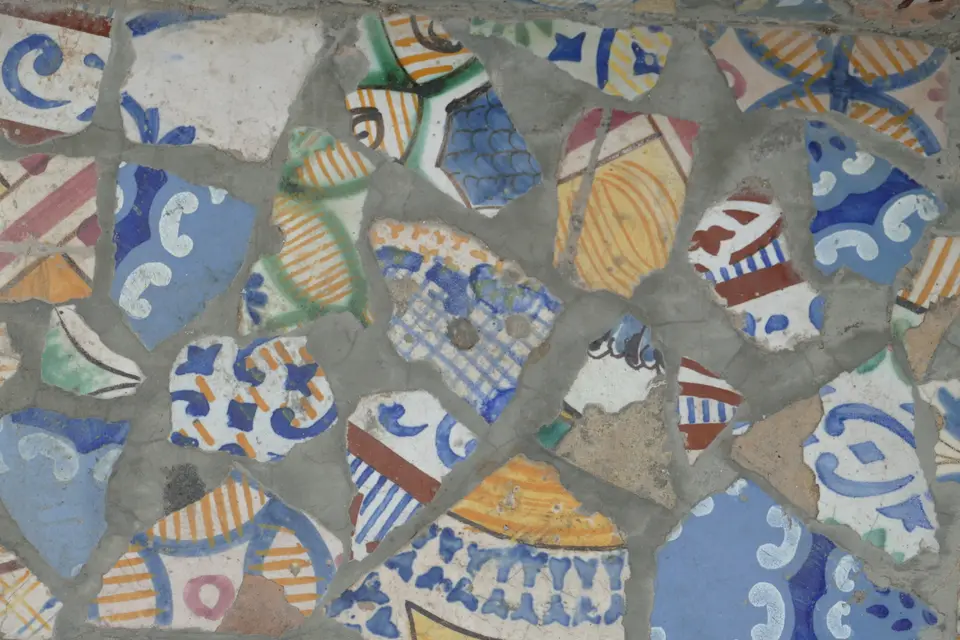

Carrelage au sol grand format
Pose collée de grès cérame pleine masse, dalles XXL rectifiées, respect scrupuleux des temps de séchage et joints fins réguliers au millimètre.
Spécialiste de la pose de carrelage au sol, de revêtements muraux céramiques et de création de douches maçonnées étanches pour particuliers et professionnels.

Assureur fictif, contrat n° DEMO-0001 : chaque chantier est couvert dix ans.
Une entreprise déclarée, établie à Marseille, joignable au 04 00 00 00 00.
Un chiffrage écrit après visite, sans surprise ni ligne cachée.
Nous mettons en œuvre des techniques de pose maîtrisées pour valoriser chaque pièce de votre logement, de la préparation du mortier jusqu'au lissage final des joints.
Pose collée de grès cérame pleine masse, dalles XXL rectifiées, respect scrupuleux des temps de séchage et joints fins réguliers au millimètre.
Habillage mural pour cuisine et salle de bain avec carreaux de faïence biseautée, zelliges traditionnels ou mosaïque en pâte de verre résistante.
Système d'étanchéité liquide sous carrelage SEL et nappe SPEC, receveur encastré de plain-pied et pente d'écoulement optimisée sans rétention d'eau.
Application d'enduit de lissage autonivelant fibré haute performance pour corriger les faux niveaux avant la pose de nouveaux carreaux.
Pose de carrelage antidérapant classé R11 sur dalle béton ou montage de dalles épaisses 20 mm sur plots réglables pour terrasse drainante.
Réalisation de joints ciment hydrofuges teintés ou coulage de mortier époxy bi-composant pour une étanchéité chimique absolue en zone humide.
Découvrez un aperçu photographique de nos ouvrages récents réalisés dans l'agglomération marseillaise avec des matériaux céramiques de premier choix.




Une méthode transparente et rigoureuse pour garantir un résultat pérenne conforme aux règles professionnelles du DTU 52.2.
Analyse initiale de votre demande, conseils sur le choix des types de carreaux et planification d'un rendez-vous sur place.
Inspection de la planéité du sol, mesure de l'humidité résiduelle de la chape et relevé précis des surfaces à couvrir.
Envoi sous quarante-huit heures d'une proposition détaillée mentionnant les références d'enduit et le calepinage convenu.
Encollage soigné, découpes nettes sans éclat, coulage des joints étanches et nettoyage approfondi de fin de travaux.
Retrouvez les réponses aux interrogations techniques les plus fréquentes avant d'engager vos travaux de rénovation de sol ou de mur.
Il est indispensable dès lors que le support présente des aspérités ou des creux supérieurs à cinq millimètres sous la règle de deux mètres, afin d'éviter la casse ultérieure des carreaux.
Cette technique est envisageable sous réserve d'un ponçage mécanique du vernis existant, de l'application d'un primaire d'accrochage spécifique et de la vérification de la hauteur des portes.
Il convient de respecter un temps d'attente de vingt-quatre heures après l'encollage avant de réaliser les joints, puis vingt-quatre heures supplémentaires avant toute circulation piétonne normale.
L'étanchéité ne repose pas sur les carreaux mais sur la membrane sous-jacente : nous appliquons systématiquement deux couches de résine liquide renforcées par des bandes d'angle armées.
Vous prévoyez de rénover votre salle de bain, de remplacer le carrelage de votre séjour ou d'aménager une terrasse extérieure ? Contactez notre équipe pour une estimation sans engagement.
Réponse rapide pendant les heures ouvrables